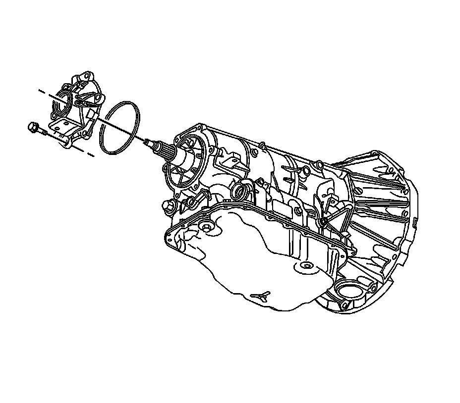
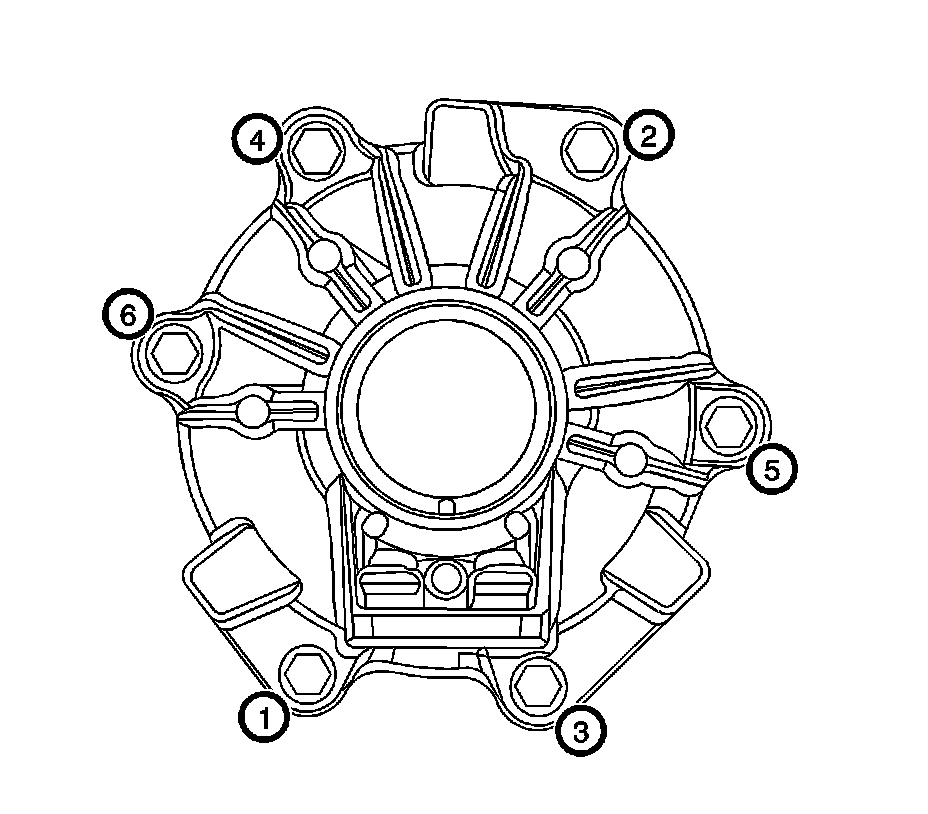

6L50/6L80/6L90 - Automatic Transmission
Case Extension and Gasket Replacement
Tools Required
J 45012 Holding Fixture
Removal Procedure
1. Raise and support the vehicle. Refer to Lifting and Jacking the Vehicle (Service and Repair) .
2. Remove the exhaust system. Refer to Exhaust System Replacement (Service and Repair) .
3. Remove the drive shaft. Refer to Rear Propeller Shaft Replacement (RWD) (Rear Propeller Shaft Replacement (RWD)) .
4. Support the transmission with a suitable jack.
5. Remove the transmission mount assembly. Refer to Transmission Mount Replacement (Rear Wheel Drive) (Transmission Mount Replacement (Rear Wheel Drive))Transmission Mount Replacement (All Wheel Drive) (Transmission Mount Replacement (All Wheel Drive)) .

6. Install the propeller shaft flange holding fixture J 45012 .
Notice: Do not reuse the flange nut. Reusing the flange nut may cause damage to the transmission.
7. Remove and discard the propeller shaft flange nut.
8. Remove the propeller shaft flange.

9. Remove the case extension housing bolts.
10. Remove the case extension housing.
11. Remove the case extension housing seal.
Installation Procedure
1. Install the case extension housing seal.
2. Install the case extension housing.
3. Install by hand the case extension housing bolts.

Notice: Refer to Fastener Notice (Fastener Notice) .
4. Secure the case extension housing bolts in the specified sequence.
Tighten the bolts to 50 N.m (37 lb ft).

5. Install the prop shaft flange.
Notice: Stake the flange nut onto the output shaft. Use the two staking grooves on the shaft to locate the staking points. Failure to stake the flange nut may result in damage to the transmission.
Important: Use a NEW propeller shaft flange nut.
6. Install the NEW propeller shaft flange nut.
Tighten the nut to 105 N.m (77 lb ft).
7. Remove the propeller shaft flange holding fixture J 45012 .
8. Install the transmission mount assembly. Refer to Transmission Mount Replacement (Rear Wheel Drive) (Transmission Mount Replacement (Rear Wheel Drive))Transmission Mount Replacement (All Wheel Drive) (Transmission Mount Replacement (All Wheel Drive)) .
Remove the transmission jack.
Install the drive shaft. Refer to Rear Propeller Shaft Replacement (RWD) (Rear Propeller Shaft Replacement (RWD)) .
Install the exhaust system. Refer to Exhaust System Replacement (Service and Repair) .
Lower the vehicle.